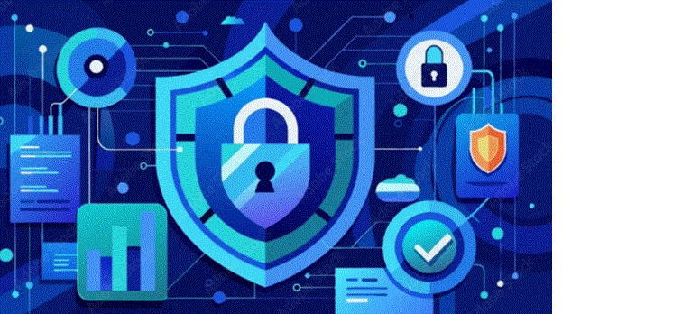

Security

Beschrijving
Binnen deze specialisatie focus ik op het beveiligen van netwerken en systemen tegen digitale bedreigingen. Cybersecurity is essentieel om data, infrastructuur en gebruikers te beschermen tegen aanvallen en ongeautoriseerde toegang.
Ik leer hoe ik risico’s kan identificeren, beveiligingsmaatregelen kan implementeren en systemen kan monitoren om mogelijke kwetsbaarheden te voorkomen. Mijn doel is om veilige en betrouwbare IT-omgevingen te creëren.
Focus op
- Netwerkbeveiliging
- Firewalls en toegangscontrole
- Basisprincipes van cybersecurity
- Beveiliging van servers en systemen
- Detectie van bedreigingen en risicoanalyse
Gebruikte technologieën
- Firewall configuraties
- Windows Server security
- Linux security tools
- Netwerk monitoring tools